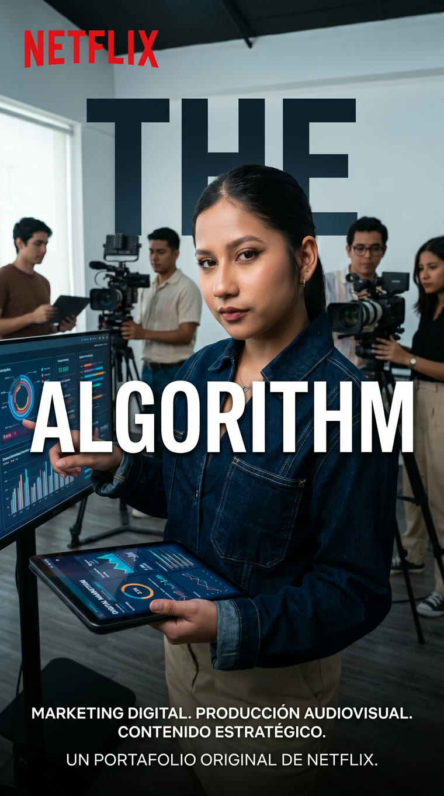

Marketing Digital
Estrategia de redes y campañas con KPI's de Meta: planeación, pauta y métricas para que cada peso invertido genere resultados medibles.
ALMA GUADALUPE CASTELLANOS CRUZ · TAMPICO, MÉX.
Marketing digital, contenido estratégico y producción audiovisual orientados a resultados. Lic. en Ciencias de la Comunicación: convierto ideas en contenido que genera alcance, comunidad y ventas.
Tres pilares para hacer crecer tu marca con contenido que conecta y convierte.
Estrategia de redes y campañas con KPI's de Meta: planeación, pauta y métricas para que cada peso invertido genere resultados medibles.
Storytelling y línea editorial basados en datos: contenido pensado para tu audiencia, tus objetivos y la conversión, no solo para “publicar”.
Preproducción, grabación, edición, motion y voz en off. Spots, reels, comerciales y video para pantallas — de la idea al export final.

HOLA, SOY
Lic. en Ciencias de la Comunicación especializada en producción audiovisual, edición de contenido y marketing digital. Combino estrategia, narrativa y datos para crear contenido que conecta con la audiencia y genera resultados reales para la marca — desde la idea hasta el video final.
Estrategias de contenido en preproducción, producción y postproducción de video para redes sociales y pantallas publicitarias, considerando KPI's de Meta.
Atención al cliente, resolución de solicitudes y cobro de productos y servicios.
Atención y organización de eventos públicos y privados.
Manejo de caja, atención al cliente, control de inventarios, registro de ventas y seguimiento de protocolos.
Manejo de redes sociales y del contenido del programa “Tendencias”. Grabación y edición de contenido televisivo y apoyo en programación pagada.
Creación de comerciales, voz en off, audiovisual y narrativa. Diagnóstico de comunicación interna en Hotel María Elena (abr–may 2023).
Universidad Autónoma de Tamaulipas
CETIS No. 109
Tampico, México · Disponible para proyectos de contenido, marketing y audiovisual.